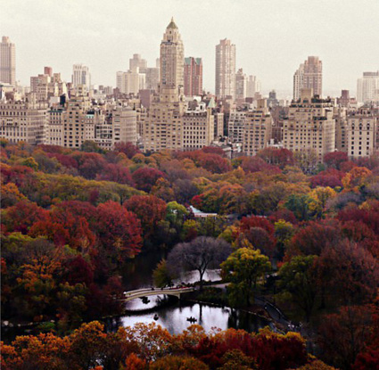

KL
9 October 2012
Bow Bridge

Bow Bridge, Central Park.
Lucky to be able to call this my backyard. Walk it most mornings with Reese and Bean. PS: Shout out to Wil, the willo tree. He's hard to see in this photo, but he's there. Love you, Wil.